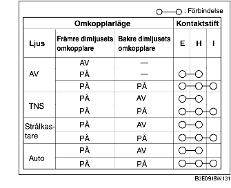

KONTROLL AV OMKOPPLARE FÖR FRÄMRE OCH BAKRE DIMLJUS
B3E091866402W01
1. Kontrollera att förbindelsen mellan kontaktstiften i omkopplaren för främre och bakre dimljus är enligt tabellen.
-
• Om den inte är som angivits i tabellen, byt ljusomkopplare.
